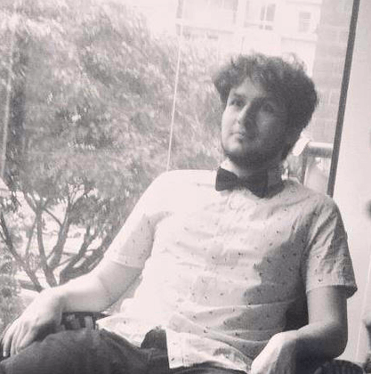

📻 RUIDAJO 🔊
~\*-*/~ Ruido - Desarrollo audiovisual - impro ~/0.0\~

z
Z
z
[→_←] Artista digital | código 🖳 | video 🎞 | audio 🕬 | 🌩 maricaditas varias [→_←]
z
Z
z
Herrador desGracia
DAHG_dial
Complot & Ruidajo
MULA
Señorita etc...
C/IAS~ (Arte Sonora)
Monokel
¿Viajas conmigo?
Coloquio PUJ Artes Sonoras (2014)
Distorsión Asistida
Telestesia
Grabacion-Música en Doc:"Hombres de barro"
El Gran Marrano No Se Vende
Cuarteto La Flor
"Hacer y hacer"(video) El Espectador
Baquema
Cratila - red de creación sonora participativa
Auris Mundos/Mundos Auriculares en Que no cunda el pánico (¿hay otras maneras?)
Cheriantus Cherie de Juan Gabriel Osuna
Jam poético con Frank Báez en BLAA
Orquesta de la tierra caliente
FILBO 30años - El Espectador 130años
test 3D webgl